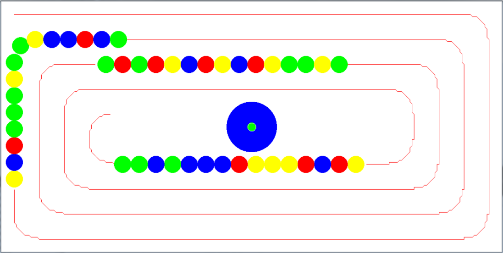

Build a simplified Zuma video game in C++ and 30 hours

Presentation of the project
This project was carried out during a programming course at École des Ponts ParisTech. The goal of this project was to create in pairs and in about thirty hours a simple game based on the C++ language.
We wanted to reproduce a Zuma game, as illustrated above, focusing on the algorithmic functioning of the game - graphics not being the priority of a C++ programming course, as you will see at the end of the article…
Principle of the game
"Zuma is a video game developed by PopCap Games, released in 2003. […] The goal is to form chains of balls of the same colour (which has the effect of making them disappear) before the balls arrive in the hole in the middle. The more levels progress, the more balls of different colours, the faster they go and the more courses there are. It is also possible to collect various bonuses (coins, various objects) that increase the score, and some balls have special powers (explosive, slowing down the game, etc.)". (Reference: French Wikipedia)
Thus for each level of the game, a global initialization of the level is made with the sending of a snake of balls, and the end of the level is defined according to certain criteria of difficulty: number of balls per snake, number of snakes, number of colors of balls, speed of movement of the snakes…
As long as the level is not finished, you have to manage :
- the movement of the snakes
- the ball shot
- inserting the ball into the snake
- destruction of marbles if necessary ($3$ marbles or more of the same color aligned)
- the sending of another snake under conditions
Making the game in C++
Our main objective was to reproduce the scrolling of the log snakes around the frog, as well as the shooting of the frog's logs to eliminate the log snakes. To do this, we created different classes briefly described below :
- zuma: launch and general operation of the game
- frog: choice of shooting ball and shooting of balls
- snake: creating and moving snakes, adding and destroying beads.
- ball: creation and movement of balls
- level : difficulty criteria of the current level (number of balls, snakes, colors, speed…)
- trajectory : path on which the snakes of marbles move
- tools: global functions and parameters
Expectation vs. reality
Although the game was operational at the end of the time limit, we didn't have time to work on the graphics…